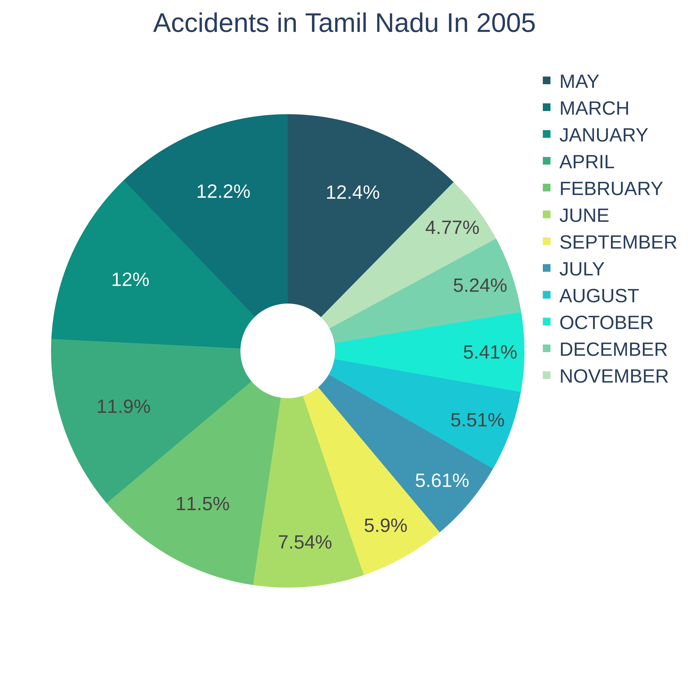
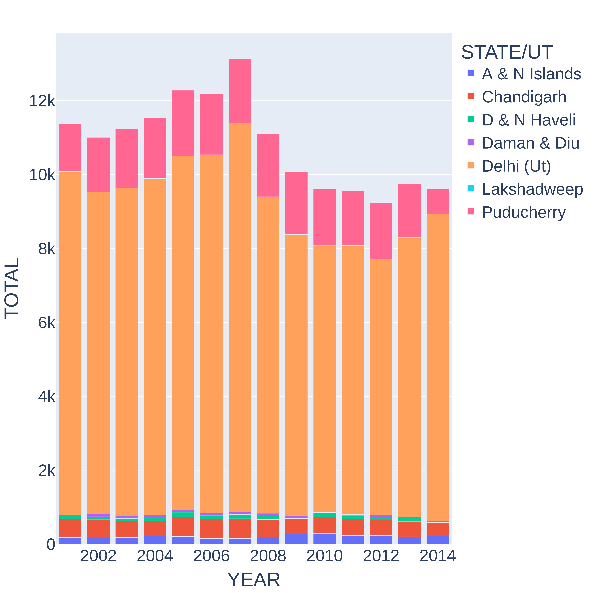
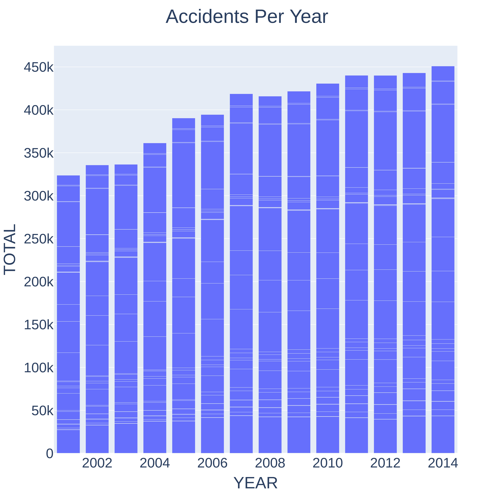
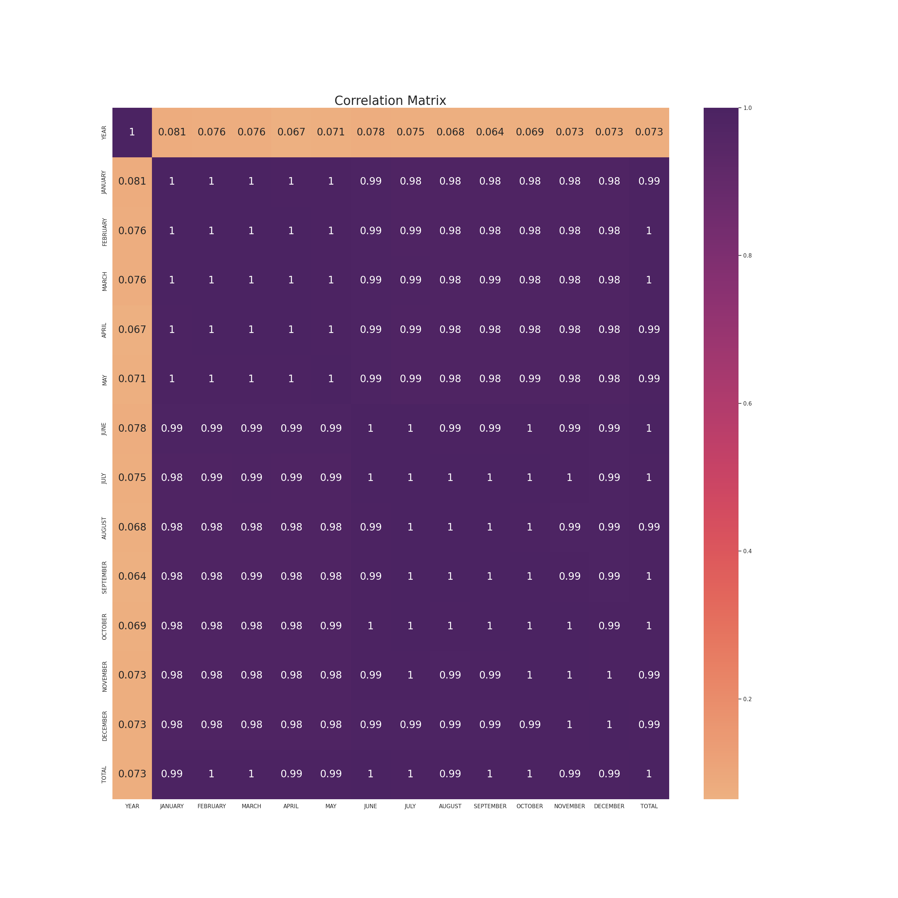
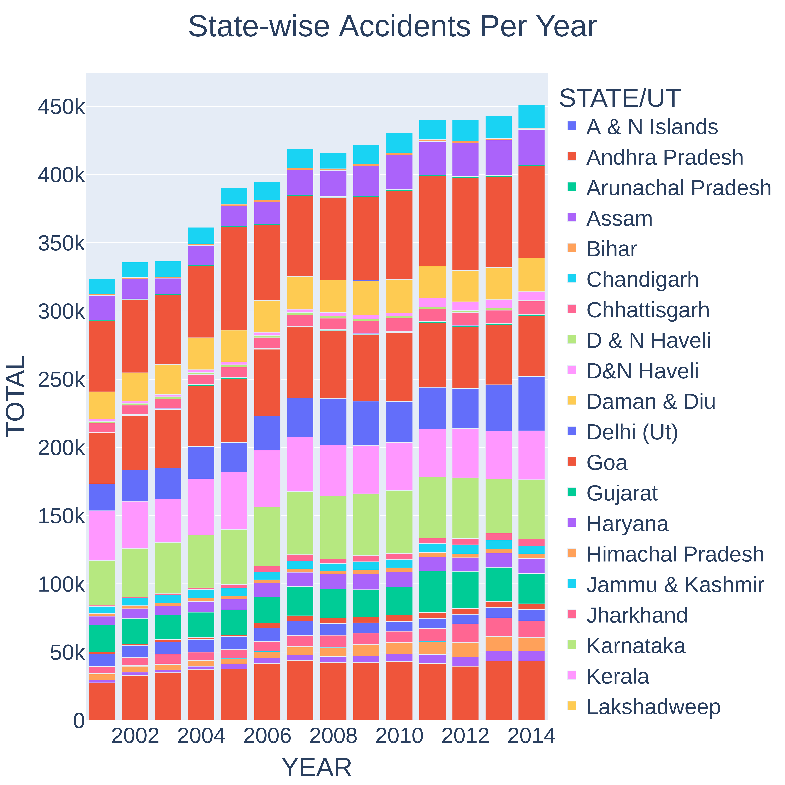
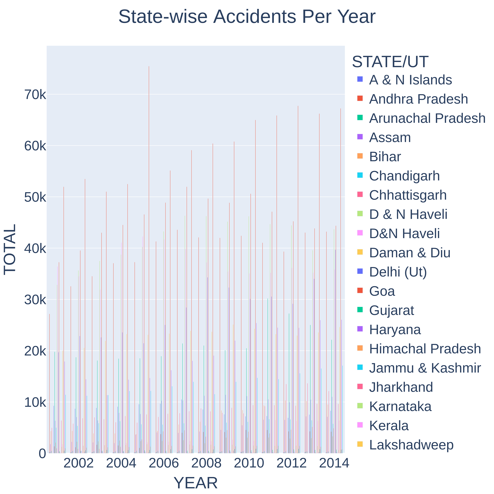

{% extends 'base.html' %} {% block title %}Analytics{% endblock %} {% block
dataset_info %}

<div class="row mt-2 mb-2 d-flex mx-auto">
  <div class="card col-6">
    
  </div>
  <div class="col-6">
    <i class="fa fa-forward"></i>
    <span class="lead">
      In this code, the fas class specifies that we're using a "solid" style
      icon, and the fa-thumbs-up class specifies which specific icon to use. You
      can find a full list of available icons and their class names on the
      FontAwesome website.
    </span>
  </div>
</div>
<div class="card row mt-2 mb-2 d-flex mx-auto">
  
</div>
<div class="row mt-2 mb-2 d-flex mx-auto">
  <div class="card col-6">
    
  </div>
  <div class="col-6"></div>
</div>
<div class="card row mt-2 mb-2 d-flex mx-auto">
  
</div>
<div class="card row mt-2 mb-2 mx-auto">
  
</div>
<div class="card row mt-2 mb-2 d-flex mx-auto">
  
</div>
{% endblock %}
